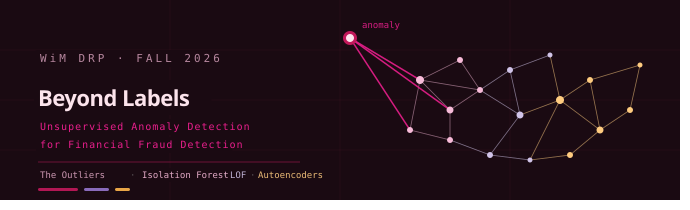

Research code and materials for the Women in Mathematics Directed Research Program (WiM DRP), University of Waterloo, Fall 2026. Project team: The Outliers.
Financial fraud is difficult to identify because fraudulent transactions are rare, evolving, and often poorly represented by reliable labels. This project investigates whether unsupervised anomaly detection can identify potentially fraudulent transactions without using fraud labels during model training.
We compare two primary methods, Isolation Forest and Local Outlier Factor (LOF), on the IEEE-CIS Fraud Detection dataset. Autoencoders are included as a stretch goal. Labels are withheld during training and are used only after scoring for evaluation and analysis.
Weekly tasks for the DRP, in order.
Task 1Get comfortable with unsupervised learning and anomaly detection, then start exploring Isolation Forest specifically.
Task 2Read the paper that started it all, and understand the core idea behind Isolation Forest.
Isolation Forest isolates observations by randomly partitioning the feature space. Rare and unusual observations tend to be isolated in fewer splits, producing higher anomaly scores.
LOF compares the local density around an observation with the density around its neighbors. An observation in a substantially less-dense region than its neighbors is treated as a local outlier.
An autoencoder is a neural network trained to reconstruct predominantly normal transaction data. A large reconstruction error can indicate an anomalous transaction. This method will be implemented if time and compute resources permit.
The project uses the IEEE-CIS Fraud Detection dataset from Kaggle: identity and transaction features from an e-commerce fraud detection competition.
See LICENSE for the repository license. Dataset licenses and terms are determined by the respective Kaggle dataset owners and must be reviewed before redistribution.
Last updated: 2026-09-18